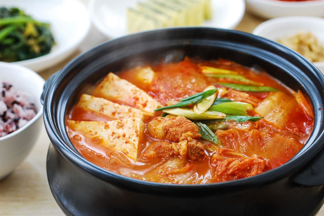

Kimchi Jigae

Description
When I graduated university I moved to Korea and I lived there for three years. And for me the most comforting food that I ate there was Kimchi Jigae.
This is a spicy soup made with kimchi, pork, tofu, and vegatables. It does not take long to prepare and it truly an iconic Korean dish that you will love.
Ingredients
- 2 cups packed bite size kimchi fully fermented
- 4 ounces fresh pork belly or other pork meat
- 1 to 3 teaspoons gochugaru (Korean red chili pepper flakes)
- 1 teaspoon minced garlic
- 1 tablespoon cooking oil
- 6 ounces tofu
- 2 scallions
Steps
- Cut the kimchi into bite size pieces.
- Cut the meat into bite sizes. Slice the tofu (about 1/2-inch thick), and roughly chop the scallions.
- Heat a small to medium pot with 1 tablespoon of oil. Add the kimchi, pork, red pepper flakes and garlic and cook over medium high heat until the kimchi is softened and the pork cooks through, about 5 to 7 minutes.
- Add the kimchi juice and about 2 to 2.5 cups of water (or broth). Bring it to a boil, and continue cooking for 5 minutes. Then, reduce the heat to medium, and boil, covered, for about 15 minutes. You can add more water if necessary.
- Drop the tofu and scallions in. Salt (or soup or regular soy sauce) and pepper to taste. (Salt is usually not necessary, unless kimchi was lightly seasoned or kimchi juice is not available.) Boil until the tofu is cooked through, about 5 minutes. Serve while bubbling over from the heat.